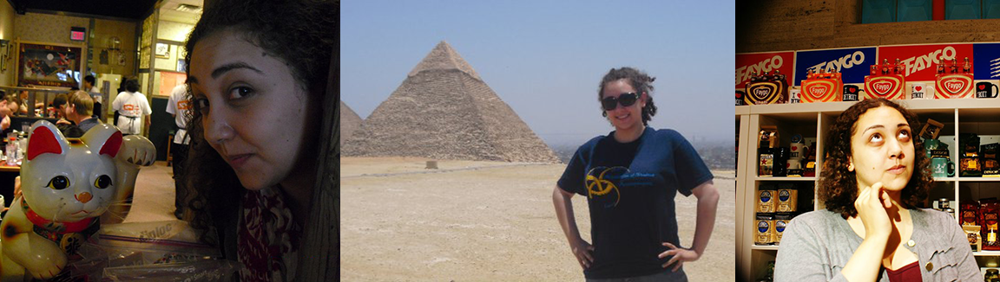

umich school of information masters student | intern for hire
About Me
Hello!
I'm Maryam. I've had a winding journey to my current trajectory, but I've enjoyed the ride.
Fresh from graduating in 2014 with an honors double major degree in Linguistics and in Biopsychology, Cognition, and Neuroscience from the University of Michigan, I dove into PhD studies in Brain & Cognitive Sciences at the University of Rochester. I studied how human brains can integrate implicit social and linguistic knowledge to leverage more efficient real-time language processing.
That human brains might operate a bit like computers with (neural) hardware and (cognitive) software is currently a popular notion amongst brain scientists, but human brains are more powerful and sophisticated than any computer. My work in Rochester made me think about how the growth of pervasive computing like voice-activated assistants and other devices can benefit from what we know about our brains' aptitude to learn and adapt in a world of rich, complex experiential data.
Ultimately, the academic life wasn't for me and I've taken my skills and passion to the field of information science back at the University of Michigan. I've always been most interested in interdisciplinary scenarios: cognition and linguistics, science and humanities, data and interface. Each discipline has its own exciting research and applications, but when put together they can give rise to unique and powerful ideas. I feel just as at home wrangling data as I do conducting user research and designing web interfaces. In fact, in my PhD work I had to do some version of all these things on a regular basis in order to perform my experimental research.
In my personal life, I'm a diehard indoor enthusiast. I enjoy DIY home projects, crafting, knitting, cooking, and hanging out with my cat, Oberon. If I'm leaving the house I'm going to travel somewhere new and exciting!